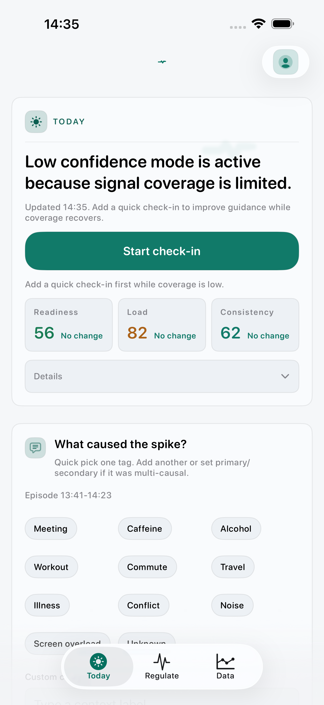
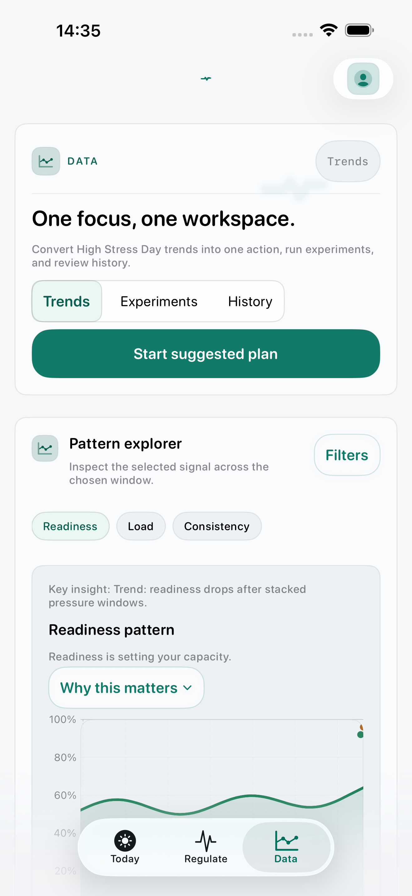
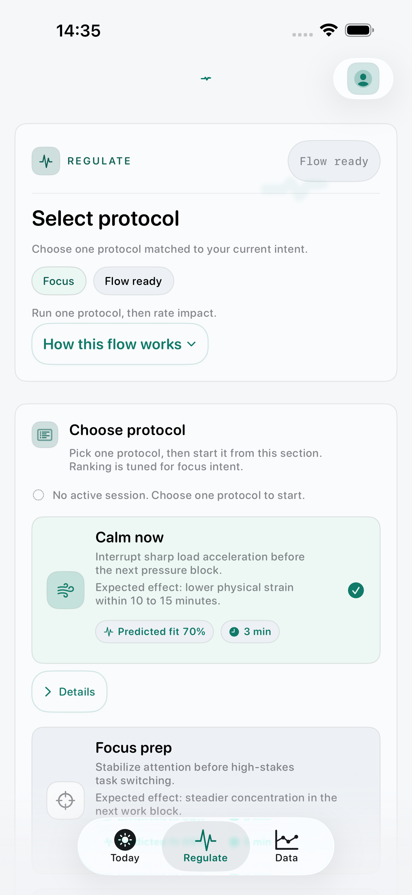
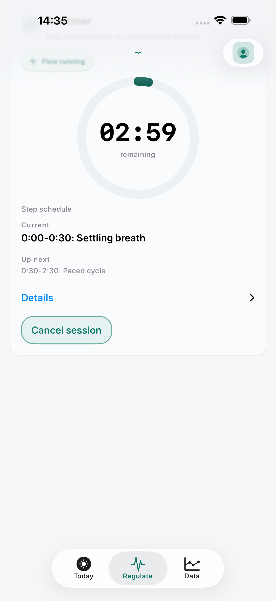
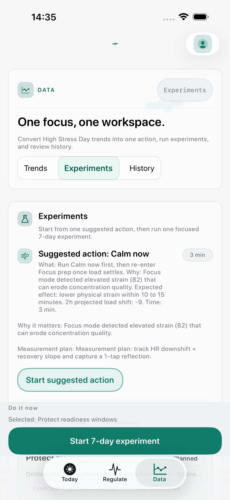
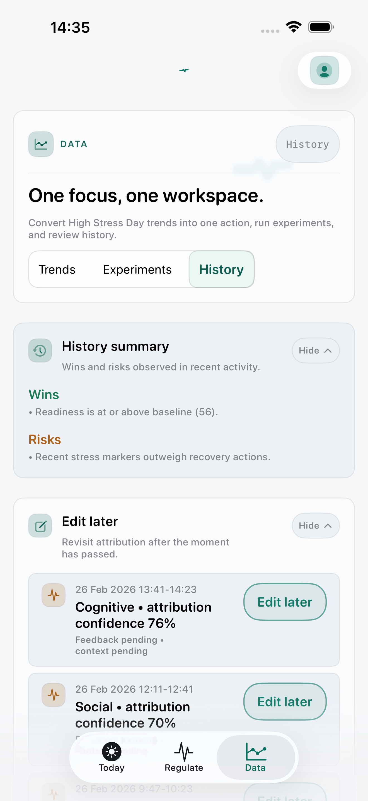

Read state quickly
Today shows Load, Readiness, and Consistency plus one best next step.
MindSense AI v1.0.0 · iOS
MindSense AI helps users quickly understand current state, run one guided protocol, and learn what works over time. It is local-first, trust-forward, and built with deterministic quality gates.


Core Product Loop
Today shows Load, Readiness, and Consistency plus one best next step.
Regulate guides a short intervention with timer pacing and completion capture.
Users record immediate effect so recommendations can improve with use.
Data turns sessions, check-ins, and experiments into trend and decision support.
Main Sections
The Today surface prioritizes one clear action path with confidence context, timeline insights, and a lightweight check-in flow.

Ranked presets map directly to intent mode and current model state.

Calm pacing, timer progression, and post-session impact recording in one flow.

Runs focused 7-day experiments with clear lifecycle transitions.

Recent activity and event context for better model-learning feedback loops.
For Investors
For Stakeholders
Quality And Governance
0
Today, Regulate, and Data are optimized as one deterministic daily loop.
0
Activation, D1 retention, D7 retention, starts, and completion.
0
Contrast, snapshots, dynamic type, and interaction latency/motion.
0
No cloud dependency is required for current app runtime behavior.
Use this website as the external narrative layer while the app demonstrates depth in-session.